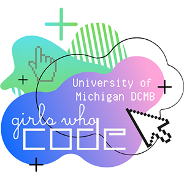
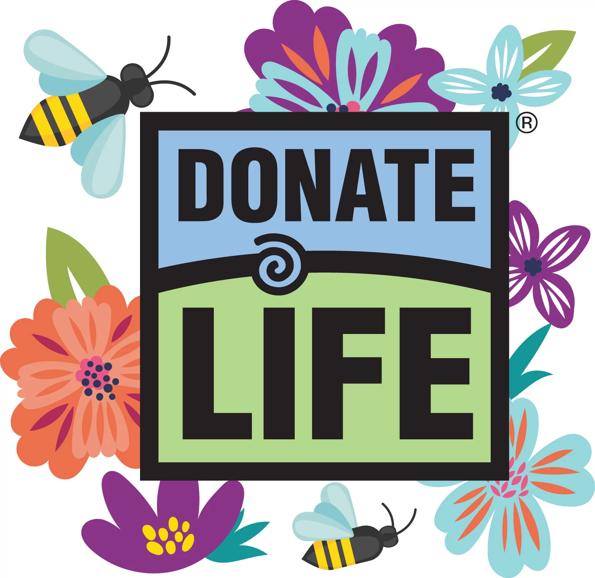
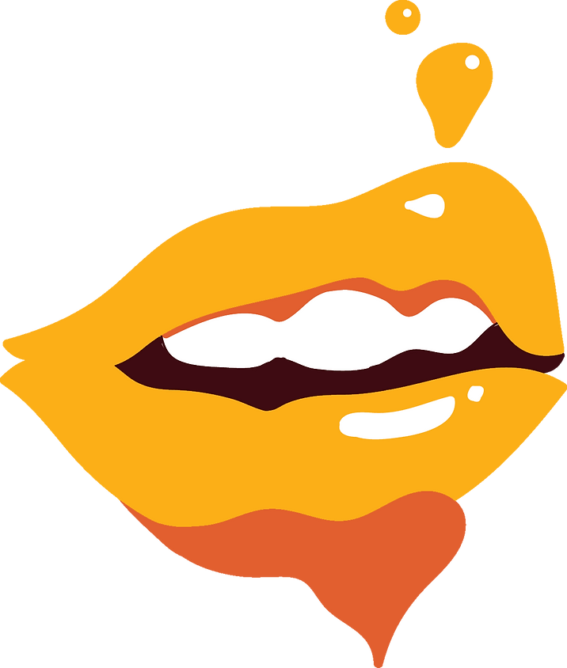
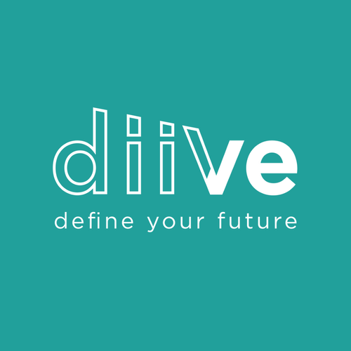
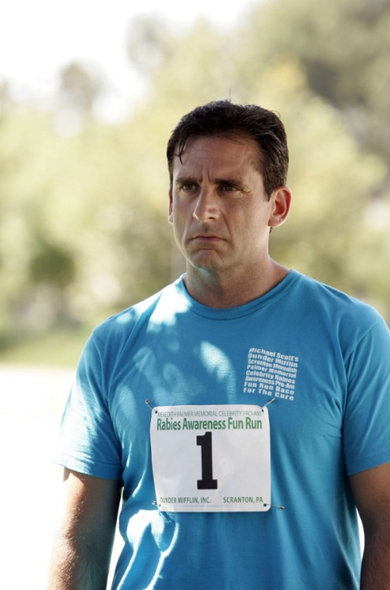

Girls Who Code
I was a mentee in a cohort of GWC through the University of Michigan Department of Computational Medicine and Bioinformatics. The program was broken into 2 semesters – In semester 1, we learned Python with an emphasis on data science, and in semester 2, we were put into groups with PhD mentors and completed a project with an assigned database using our skills. My team had survey data about Californians’ diets. At the end of the program, we formally presented our findings. This program stressed collaboration and acknowledging each others’ differences in order to make the most out of our technical skills. In addition to creating something really cool with code, I also understood the value of inclusivity and human-interaction in STEM. This program is what originally piqued my interest with data analysis.
Lifeline
Myself and 2 friends ran this club in our junior and senior years of high school. Our mission was to educate our peers and local community about organ donation and the benefits of registering to be an organ donor. My official role was as Outreach Director, so my specific duties concerned reaching out to local businesses/sponsors, running our social media accounts, organizing outreach events (organ donor drives, speaker events, fundraisers), and publicizing those events. I also was responsible for general club duties, such as running meetings. Being a part of Lifeline allowed me to experience being in a leadership role and helped me understand the importance of prioritizing tasks, staying organized, and communicating effectively. It was greatly rewarding to educate others on an important topic and getting to learn alongside them as well.
KPMG Australia
This self-paced, virtual, data analytics internship required me to deliver findings in the form of marketing recommendations for a bicycle company based on their customer purchase data. To do so, I used Python, SQL, and Tableau to perform operations, create visualizations, and find patterns in this structured data. I compiled my findings into a formal presentation. Because this was self-paced, I had to rely on organization and time-management to complete tasks on time, since I didn’t have someone enforcing deadlines. In addition to advancing my technical skills in data cleaning and analysis, I gained self-discipline and valuable soft skills for my professional life ahead.

What the F
To pursue my creative interests in college, I joined What the F. What the F is a student organization that educates the UMich campus and the community at large on intersectional feminism. We have several projects/initiatives, such as our magazines and educational events, but I’m involved in the Podblog (Podcast + Blog) team. I started as a member of the team in my freshman year and worked with 4 other members at the time. No podcast had been sustained in What the F up until that point, so we worked together to build a new podcast from the ground up. After being a member of the team for a year, I was promoted to Podblog Co-Director, my current position. In this position, I run weekly meetings with my team, delegate podcast/blog tasks, write episode outlines, coordinate recordings, and edit recordings using Adobe Premiere Pro. Additionally, I facilitate the What the F Blog on Wordpress. I contribute to and manage the blog site, including delegating blog posts and increasing website interaction by 20% from 2021 to 2022. In the time I’ve been a part of What the F, I’ve loved educating and learning about intersectional feminism in an inclusive campus environment.
diiVe
I was accepted to the virtual cohort for summer 2023 to consult for companies based in South Africa. Many of the mentors and interns were from Africa, but a handful were from Europe, Asia, South America, and of course, all across the US. This was one of the coolest parts about this internship – I got to learn from people with unique backgrounds and perspectives. I began with 2 weeks of training, “Consulting in the New Normal,” to learn about consulting principles, agile mindsets, the South African landscape, and teamwork. Then, I was placed into a team of 6 (5 students and 1 project mentor) to consult for 4WKS Coffee, a sustainable coffee company in Cape Town, and worked as 1 of 2 research leads. My roles involved supervising and delegating client and market research, developing consulting-style presentations, analyzing purchase and marketing data, and overseeing the final report for the client. Our final product was a thorough, agile market sizing solution that would help 4WKS achieve their 2023 sales goals. This internship furthered my interest in using data analysis to solve problems but added the components of stakeholder interaction, iterative project management, and agile leadership.
Greenfoot Fun Run
This project was completed by my friend and I in high school for AP Computer Science A using Java. Inspired by this scene from The Office, Fun Run (title inspired by S4 E1) is an obstacle game where the player dodges show-relevant obstacles (squirrels, alfredo, etc.). The project is coded using the Java language but is delivered using Greenfoot.
Spotify Data Capstone Project
I find Spotify data to be one of the most interesting things to analyze, and it seems like many users agree (Spotify Wrapped is highly anticipated for a reason)! For my capstone project in the Python for Everybody specialization, I decided to use Python and SQL to make a simple program relating to my personal Spotify data as of April 2022. The program allows for the user to input an artist’s name and outputs information from my data pertaining to that artist. It also stores my data into SQL databases.

Never Lose a Footrest Again
From volunteering at a group home in high school, I noticed an issue with wheelchairs being used in common areas. Oftentimes, wheelchairs don’t fit well through entries and doorways. I decided to do something about this by modifying the footrest design of wheelchairs. Normally, the footrests are stowed outward, but stowing them inward would allow for the width of the wheelchair to be reduced. I proposed this as a design patent to the USPTO.

How Starbucks uses Technology to Trick us All
This is a longform blog post I wrote and published on Medium as a project for SI 110 in spring 2022, which earned a grade of 238/250. I wrote about the ways that Starbucks uses Information Science principles to “trick” customers and continue a positive feedback loop of customer interaction, which ultimately drives a significant portion of their success today.